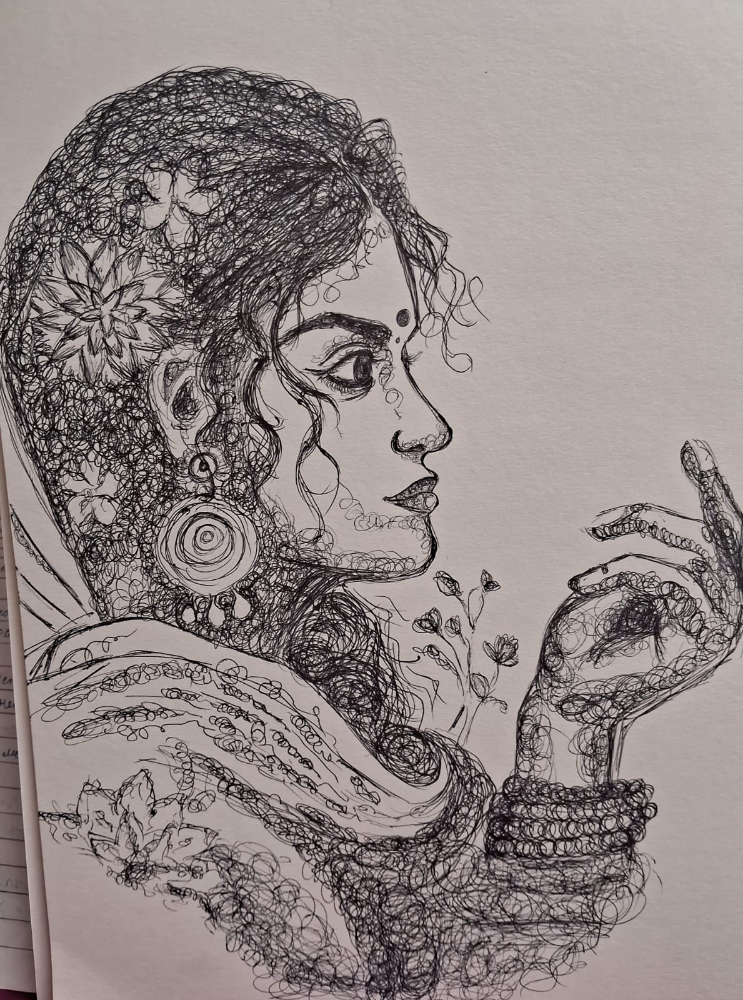

Overview
PEN ART, also known as pen and ink drawing, is a versatile medium focused on precision, high contrast, and intricate line work. Unlike painting, it relies on the layering of ink strokes to create depth and texture.
Essential Techniques
Because ink is permanent, artists use specific patterns to create shading and form:
- Hatching: Drawing closely spaced parallel lines to create tonal values.
- Cross-Hatching: Layering sets of lines at different angles to build deeper shadows.
- Stippling: Using thousands of tiny dots to create soft gradients and realistic textures.
- Contour Lines: Using curved lines that follow the shape of the subject to suggest volume.
Popular Tools
Artists choose different pens depending on the level of detail required:
- Technical Pens (Micron): Best for consistent, archival-quality fine lines.
- Fountain Pens: Offer elegant line variation and a classic feel.
- Brush Pens: Allow for expressive, thick-to-thin strokes similar to a paintbrush.
- Ballpoint Pens: Excellent for casual sketching and smooth shading.
